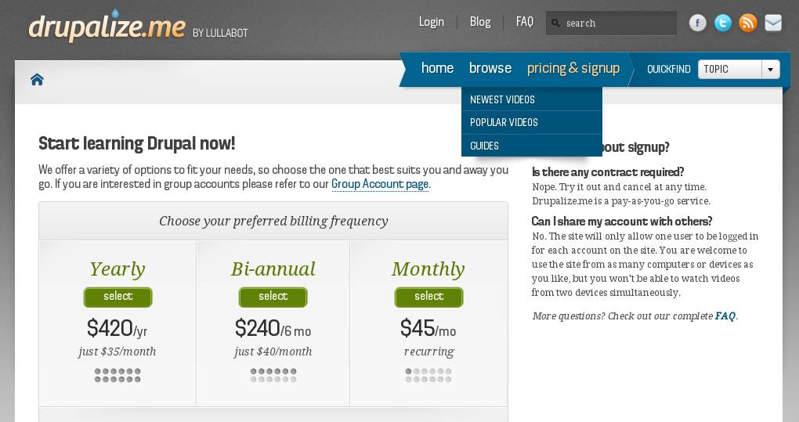

Gherkin provides some ways to improve readability:
Several scenarios that all share the same setup can share a background.
1 2 3 4 5 6 7 8 9 10 11 12 | Scenario: Access workbench
Given I am logged in as "editor"
And I am on the homepage
When I click "workbench"
Then I should see "My articles"
Scenario: Access admin list
Given I am logged in as "editor"
And I am on the homepage
When I click "Content"
Then I should not see "Access denied"
And I should see "Content"
|
1 2 3 4 5 6 7 8 9 10 11 12 | Background:
Given I am logged in as "editor"
And I am on the homepage
Scenario: Access workbench
When I click "Workbench"
Then I should see "My Articles"
Scenario: Access admin list
When I click "Content"
Then I should not see "Access denied"
And I should see "My Articles"
|
1 2 3 4 5 6 7 8 9 10 11 12 13 14 | Scenario: Purchase plan
Given I am on "/signup"
When I select the "yearly" plan
Then I should see "Payment Option: "Yearly"
Scenario: Purchase plan
Given I am on "/signup"
When I select the "bi-annual" plan
Then I should see "Payment Option: Bi-annual"
Scenario: Purchase plan
Given I am on "/signup"
When I select the "monthly" plan
Then I should see "Payment Option: Monthly"
|
1 2 3 4 5 6 7 8 9 10 | Scenario Outline: Purchase plan
Given I am on "/signup"
When I select the "<plan>" plan
Then I should see "<text>"
Examples:
| plan | text |
| yearly | Payment Option: Yearly |
| bi-annual | Payment Option: Bi-annual |
| monthly | Payment Option: Monthly |
|
This will run as three complete scenarios, one for each line
You can introduce custom steps to allow tables.
These tables will NOT cause the scenario to be re-run.
Instead, they’ll look for or act on elements on the same page
This scenario is wordy and redundant (but automated!)
Scenario: Plans from the homepage - automatable
Given I am on the homepage
When I click "Pricing & Signup"
Then I should see the heading "Start learning Drupal now!"
And I should see "Yearly"
And I should see "Bi-annual"
And I should see "Monthly"
And I should see "$420"
And I should see "$240"
And I should see "$45"
This is easier to scan
Scenario: Plans from the homepage - less redundant
Given I am on "/signup"
Then I should see the following <text>:
|text |
|Yearly |
|Bi-annual |
|Monthly |
|$420 |
|$240 |
|$45 |
This is just a single scenario. Note the absense of the key words Scenario Outling and Examples
<?php
/**
* Check for several text values on a single page using a table of values
*
* @Then /^I (?:should |)see the following <text>:$/
*/
public function iShouldSeeTheFollowingText(TableNode $table) {
$page = $this->getSession()->getPage();
$table = $table->getHash();
foreach ($table as $key => $value) {
$text = $table[$key]['text'];
if($page->hasContent($text) === FALSE) {
throw new \Exception(sprintf("The text '%s' was not found", $text));
}
}
}
?>
The previous snippet fails the first time a piece of text doesn’t match, but since they’re not dependent, a better approach is to return the success or failue of all the checks:
1 2 3 4 5 6 7 8 9 10 11 12 13 14 15 16 17 18 19 20 21 22 23 | <?
/**
* @Given /^I (?:should |)see the following <texts>$/
*/
public function iShouldSeeTheFollowingTexts(TableNode $table) {
$page = $this->getSession()->getPage();
$messages = array();
$failure_detected = FALSE;
$table = $table->getHash();
foreach ($table as $key => $value) {
$text = $table[$key]['texts'];
if($page->hasContent($text) === FALSE) {
$messages[] = "FAILED: The text '" . $text . "' was not found";
$failure_detected = TRUE;
} else {
$messages[] = "PASSED: '" . $text . "'";
}
}
if ($failure_detected) {
throw new Exception(implode("\n", $messages));
}
}
?>
|
{kind=link}